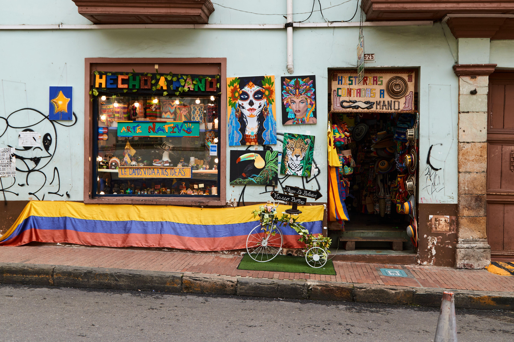
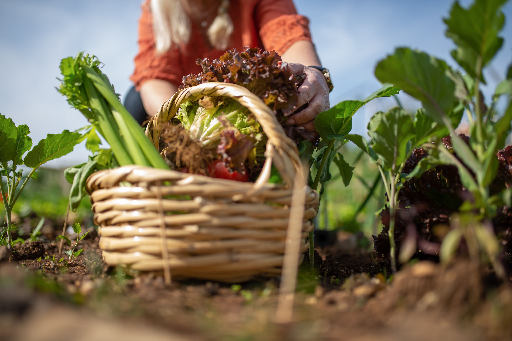
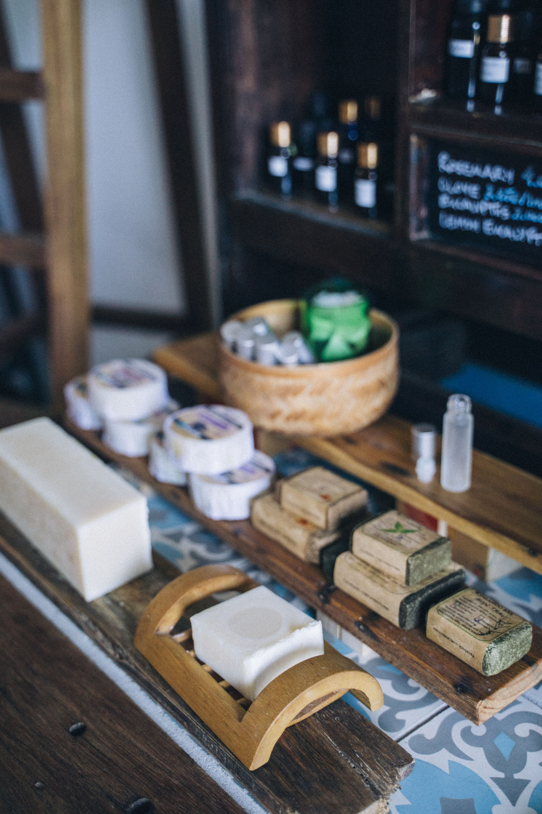
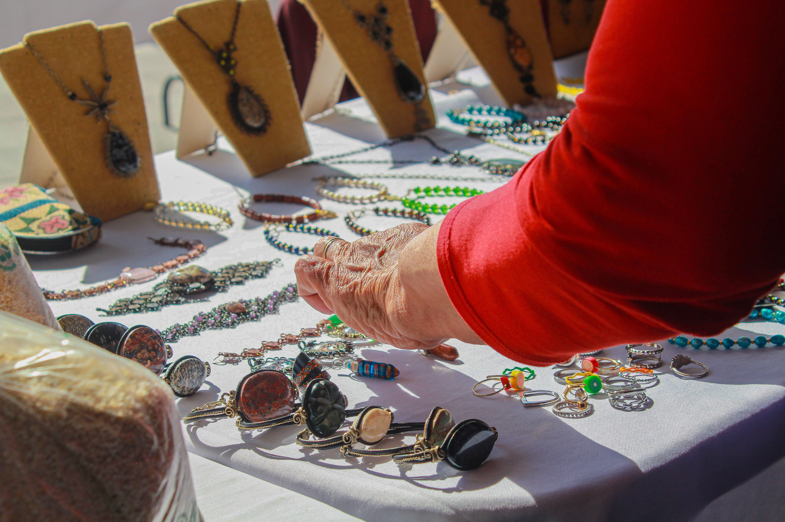
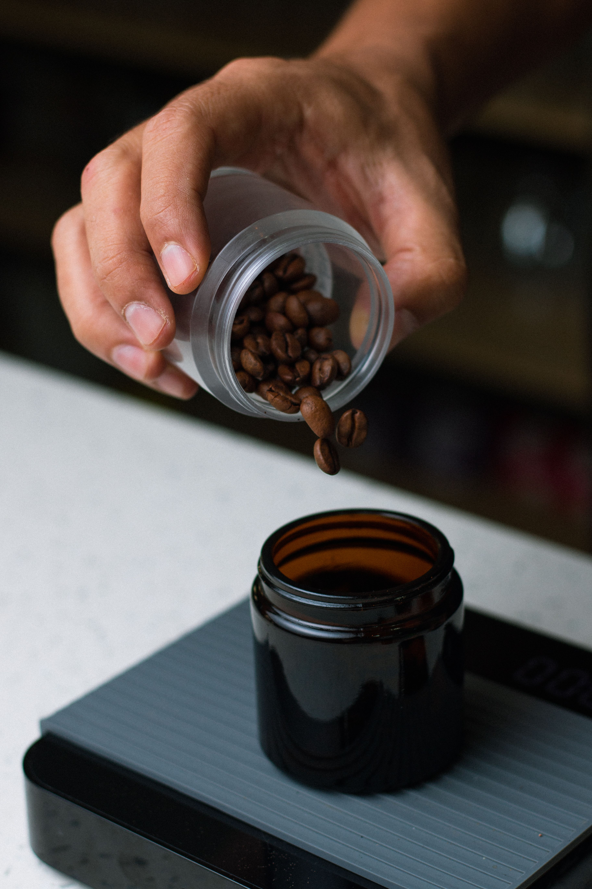

Cerámica de territorio
Piezas inspiradas en las aguas, semillas y aves de la sabana.
Ver detallesProductos artesanales, agroecológicos y botánicos elaborados por iniciativas locales de Suba.

Piezas inspiradas en las aguas, semillas y aves de la sabana.
Ver detalles
Cosechas de huertas urbanas, frescas y cultivadas con cuidado.
Ver detalles
Jabones, ungüentos e infusiones de plantas de uso responsable.
Ver detallesAccesorios tejidos que llevan color, oficio y relatos comunitarios.
Ver detalles
Pequeñas piezas elaboradas a mano para celebrar el detalle.
Ver detalles
Tostión local en pequeños lotes para acompañar cada conversación.
Ver detalles